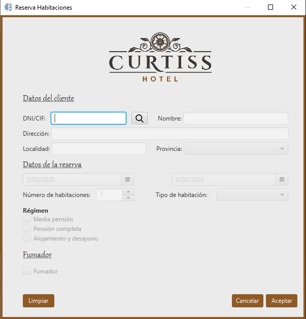
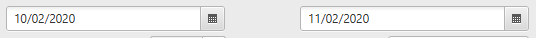
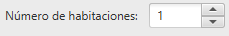
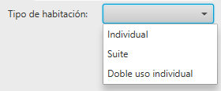
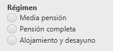
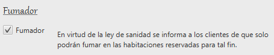

Esta ventana de ayuda le indicará paso a paso como funciona la ventana de Reserva de Habitaciones y como introducir paso a paso una reserva.
Esta ventana se divide en dos secciones, la primera, Datos del cliente que podrá encontrar su ayuda detallada en Ayuda de Reservas, y Datos de la reserva, de la que se hablará en esta sección.

Una vez realizada la búsqueda de clientes, detallada en la sección Ayuda de Reservas, se habilitarán los campos para reserva las habitaciones. Está sección consta de los siguientes campos:
Las fechas de entrada y salida podrán ser introducidas mediante dos componentes de tipo DatePicker, o selectores de fecha. Para introducir la fecha solo hay que hacer click en el icono del calendario en cada selector. El de la izquierda, se corresponde con la Fecha de entrada y, el de la derecha, con la Fecha de salida.

La Fecha de entrada tendrá como valor inicial el día actual. Se podrá seleccionar cualquier día igual o posterior a la fecha actual. No se podrá seleccionar una día anterior al día actual. Los días deshabilitados aparecerán con un fondo de color rojo.
A tener en cuenta: Al cambiar la fecha de entrada, la fecha de salida se actualizará automáticamente al día posterior.
La Fecha de salida tendrá como valor inicial el día posterior al día actual. Se podrá seleccionar un día igual o posterior a la fecha de entrada. No se podrá seleccionar un día de salida anterior a la fecha de entrada. Al seleccionar un día posterior, se avisará al usuario de que no puede seleccionar esa fecha.
El número de habitaciones podrá seleccionarse mediante un componente de tipo Spinner, o selector de ruleta, con valor por defecto 1. El máximo de habitaciones por defecto está establecido en 100 y el mínimo en 1. El campo incluye dos botones con indicadores en forma de flecha que permiten incrementar o decrementar el valor actual.

El tipo de habitación podrá seleccionarse mediante un componente de tipo ComboBox, o desplegable, que incluye tipos String, o cadena de caracteres, para referirse al tipo de habitación.
El usuario podrá elegir entre: Individual, Suite o Doble uso individual. El valor por defecto no está establecido.
Este componente dispone de control de errores. Si el usuario se olvida de seleccionar un tipo de habitación, en la alerta, detallada en Ayuda de Reservas, aparecerá un mensaje avisando al usuario de que seleccione un tipo de habitación.

El régimen de las habitaciones podrá seleccionarse mediante RadioButtons, o selectores de botón, los cuáles solo le permiten seleccionar una de entre todas las opciones disponibles.
Las opciones disponibles por defecto son: Media pensión, Pensión completa y Alojamiento y desayuno.
Este componente dispone de control de errores. Si el usuario se olvida de seleccionar un régimen de habitación, en la alerta, detallada en Ayuda de Reservas, aparecerá un mensaje avisando al usuario de que seleccione un régimen de habitación.

Si el cliente es fumador, el usuario dispone de un componente de tipo Checkbox, o selector, al cual podrá hacer click para indicar que el cliente es fumador. Tras hacer click, aparecerá un mensaje indicando al usuario el funcionamiento de las habitaciones de fumadores.
Mensaje:
"En virtud de la ley de sanidad se informa a los clientes de que solo podrán fumar en las habitaciones reservadas para tal fin."
